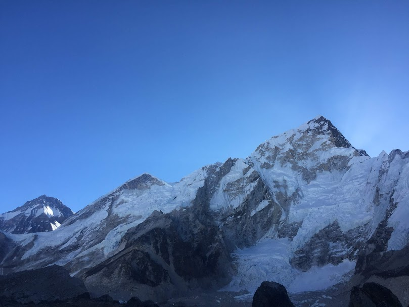
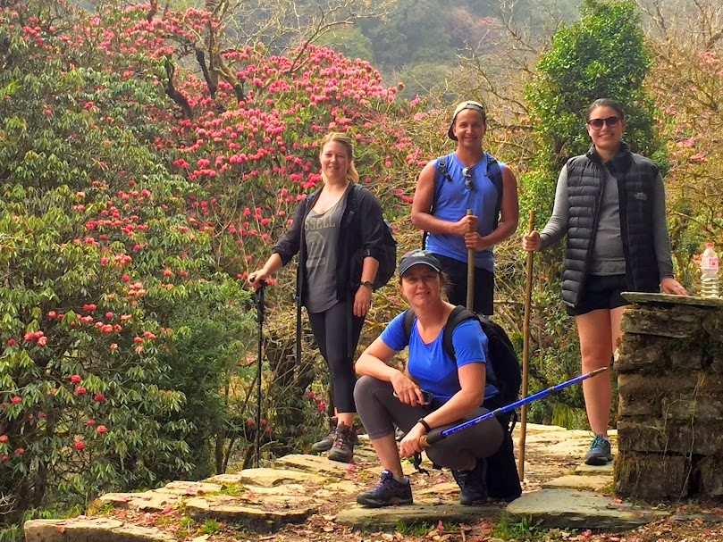
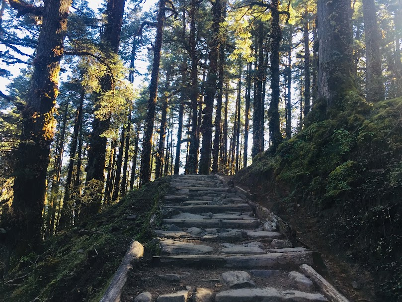
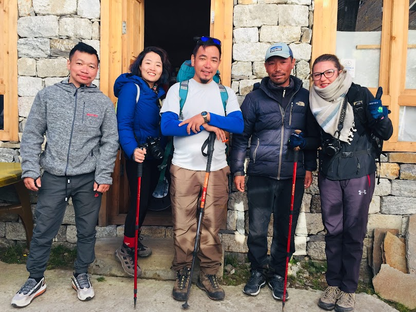

Introduction of Trekking in Nepal
Trekking in Nepal offers some of the world’s most breathtaking Himalayan adventures, making it a top destination for nature lovers and adventure seekers. Popular routes such as the Everest Base Camp Trek, Annapurna Base Camp Trek, Langtang Valley Trek, and Annapurna Circuit Trek showcase stunning mountains, diverse landscapes, and rich cultural experiences. From high alpine passes to traditional villages, trekking in Nepal provides unforgettable journeys for all levels of trekkers. Whether you seek challenging trails or scenic hikes, Nepal has it. Explore these iconic trekking routes and discover why trekking in Nepal is a once-in-a-lifetime experience for every adventure enthusiast.
Overview of Trekking in Nepal
Trekking in Nepal is one of the most iconic adventure experiences in the world, attracting travelers seeking dramatic Himalayan landscapes, rich cultural heritage, and unforgettable mountain trails. Nepal offers a wide range of trekking routes suitable for beginners and experienced hikers alike, making it a global hub for adventure tourism. Among the most popular journeys is the Everest Base Camp Trek, which leads trekkers to the base of the world’s highest peak, Mount Everest, offering stunning glacier views and Sherpa culture. The Annapurna Base Camp Trek is another classic route, taking visitors through lush forests, terraced farmlands, and breathtaking amphitheater-style mountain scenery.
The Langtang Valley Trek is known for its peaceful trails, Tibetan-influenced villages, and close-up Himalayan vistas, while the Annapurna Circuit Trek is famous for its diverse landscapes, high mountain passes, and cultural variety. These treks highlight Nepal’s natural beauty and cultural richness, from alpine meadows to traditional mountain settlements. Trekking in Nepal is not just a physical journey but also a spiritual and cultural exploration that leaves a lasting impression on every traveler. Whether you seek challenging high-altitude adventures or scenic moderate hikes, Nepal’s trekking routes offer something truly extraordinary for every trekking enthusiast.
Highlights of Trekking in Nepal
Nepal is a world-famous destination for trekking in the Himalayas with diverse landscapes and a rich culture.
- The Everest Base Camp Trek offers a legendary journey to the base of Mount Everest with stunning glacier and mountain views.
- The Annapurna Base Camp Trek features beautiful scenery, lush forests, and close-up Himalayan panoramas.
- The Langtang Valley Trek is known for peaceful trails, Tibetan-influenced culture, and less crowded routes.
- The Annapurna Circuit Trek is one of the most diverse treks, crossing high mountain passes and varied ecosystems.
- The Trekking in Nepal combines adventure, natural beauty, and authentic cultural experiences.
- Trails range from easy scenic hikes to challenging high-altitude expeditions.
- Nepal trekking routes are ideal for both beginners and experienced trekkers.
- Local hospitality and traditional mountain villages enrich the trekking experience.
- Trekking in Nepal offers a once-in-a-lifetime Himalayan adventure for global travelers.
Why Trekking in Nepal?
Trekking in Nepal is a world-renowned adventure that attracts travelers seeking breathtaking Himalayan scenery, rich culture, and unforgettable experiences. Home to iconic routes like the Everest Base Camp Trek, Annapurna Base Camp Trek, Langtang Valley Trek, and Annapurna Circuit Trek, Nepal offers diverse trails for all levels of trekkers. From snow-capped peaks and lush valleys to traditional mountain villages, every journey showcases natural beauty and authentic local lifestyles. Nepal’s warm hospitality, unique heritage, and spiritual atmosphere make trekking even more special. Whether for adventure, photography, or cultural exploration, trekking in Nepal promises a once-in-a-lifetime experience in the heart of the Himalayas.
Difficulty level of Trekking in Nepal
Trekking in Nepal is generally categorized into three difficulty levels—Easy, Medium, and Adventurous—so trekkers can choose routes based on fitness and experience.
Easy Treks
These are short and low-altitude treks suitable for beginners and families. Trails like Ghorepani Poon Hill Trek and Australian Camp Trek offer gentle walks, well-marked paths, and stunning mountain views without major physical challenges.
Medium Treks
These require moderate fitness and include longer walking hours and some altitude gain. Popular examples are the Langtang Valley Trek and Annapurna Base Camp Trek, which involve varied terrain, uphill climbs, and rewarding Himalayan scenery.
Adventurous Treks
These are high-altitude and challenging routes designed for experienced trekkers. The Everest Base Camp Trek and Annapurna Circuit Trek fall into this category, featuring long trekking days, high mountain passes, and demanding weather conditions. These treks offer the ultimate Himalayan adventure experience in Nepal.
Best time to do Trekking in Nepal
The best season for trekking in Nepal is mainly during spring (March to May) and autumn (September to November), when the weather is clear, stable, and ideal for mountain views.
The spring season (March, April, and May) offers blooming rhododendron forests, warmer temperatures, and excellent visibility, making it perfect for popular routes like the Everest Base Camp Trek and Annapurna Base Camp Trek.
Autumn season (October, November, and December) is considered the best overall trekking period in Nepal, with crystal-clear skies, fresh post-monsoon air, and comfortable temperatures. It is ideal for major treks such as the Annapurna Circuit Trek, Langtang Valley Trek, and many others.
Winter (December to February) is suitable for lower altitude treks, but high passes can be very cold and snowy.
Monsoon (June to August) brings heavy rain, slippery trails, and limited mountain views, though it is good for lush greenery and fewer crowds in certain regions.
Choosing the right season ensures a safe and unforgettable trekking experience in Nepal.
Why Nepal Unique Treks as a Local Travel Agency?
The Nepal Unique Treks is a trusted trekking and travel company dedicated to creating unforgettable Himalayan experiences with safety, comfort, and personalized service. We specialize in leading iconic journeys such as the Everest Base Camp Trek, Annapurna Base Camp Trek, Langtang Valley Trek, and Annapurna Circuit Trek, all over Nepal. Nepal must papular Activities offers like Trekking, Tours, Hiking, Climbing, we will design itineraries very carefully for all types of trekkers with afortable cost.
Our experienced local guides provide deep knowledge of culture, mountains, and trails, ensuring a safe and enriching adventure. We focus on authentic travel experiences, from remote mountain villages to breathtaking natural landscapes. With flexible packages, professional support, and a strong commitment to customer satisfaction, Nepal Unique Treks ensures every journey is memorable. Whether you are a beginner or an experienced trekker, we make trekking in Nepal easy, safe, and truly unique.
No 1: Everest Base Camp Trek
The Everest Base Camp Trek is one of the most iconic adventures in the world and a highlight of trekking in Nepal. This legendary journey takes trekkers deep into the heart of the Himalayas, offering spectacular views of Mount Everest, Lhotse, Ama Dablam, and surrounding peaks. The trail passes through traditional Sherpa villages, ancient monasteries, and dramatic landscapes, making it both a cultural and natural experience. As part of trekking in Nepal, the Everest Base Camp Trek is perfect for adventure seekers who want to challenge themselves while enjoying breathtaking scenery. From Lukla’s thrilling flight to the base of the world’s highest mountain, every step is unforgettable. This trek combines high-altitude adventure, rich heritage, and stunning beauty, making the Everest Base Camp Trek a dream journey for travelers worldwide.
Everest Base Camp Trek – Highlights
An iconic trekking experience in Nepal to the base of the world’s highest peak, Mount Everest (8,848.86 m).
Scenic flight to Lukla, one of the world’s most thrilling mountain airports.
- Stunning views of Everest, Lhotse, Nuptse, and Ama Dablam throughout the journey.
- Explore Sherpa culture, traditions, and hospitality in villages like Namche Bazaar and Khumjung.
- Visit ancient Buddhist monasteries such as Tengboche Monastery.
- Trek through Sagarmatha National Park, a UNESCO World Heritage Site.
- Walk across suspension bridges over deep Himalayan valleys and rivers.
- Experience diverse landscapes from green forests to high alpine terrain and glaciers.
- Reach Everest Base Camp (5,364 m) and witness Khumbu Icefall.
- Enjoy a sunrise view from Kala Patthar, the best panoramic viewpoint of Mount Everest.

2. Annapurna Circuit Trek
Trekking in Nepal offers some of the most diverse and spectacular Himalayan adventures, and the Annapurna Circuit Trek is one of its most iconic routes. Known for its incredible variety of landscapes, this classic trek circles the Annapurna massif, taking trekkers through lush subtropical valleys, alpine forests, and high mountain deserts. The journey also crosses the famous Thorong La Pass, one of the highest trekking passes in the world, offering breathtaking panoramic views. Along the way, trekkers experience rich cultural encounters with Gurung, Thakali, and Manangi communities. The Annapurna Circuit Trek perfectly combines adventure, natural beauty, and cultural exploration, making it a must-do experience for anyone interested in trekking in Nepal.
Annapurna Circuit Trek - Highlights
The Annapurna Circuit Trek is one of the most popular trekking routes in Nepal.
It offers diverse landscapes, from lush green valleys to high-altitude desert terrain.
- The trek crosses the famous Thorong La Pass (5,416m), one of the highest trekking passes in the world.
- Trekkers experience stunning views of Annapurna, Dhaulagiri, Manaslu, and other Himalayan peaks.
- The route passes through the traditional villages of Gurung, Thakali, and Manangi communities.
- It provides rich cultural experiences along with natural beauty.
- The trek is suitable for moderately experienced trekkers with good fitness levels.
- Tea houses along the trail offer comfortable accommodation and local cuisine.
- The Annapurna Circuit Trek is a perfect mix of adventure, culture, and scenic beauty.
- It is a must-do journey for those exploring trekking in Nepal.

3. Annapurna Base Camp Trek
The Annapurna Base Camp Trek is one of the most popular adventure journeys for travelers seeking an unforgettable trekking experience in Nepal. Located in the heart of the Annapurna region, this spectacular trek takes you through traditional villages, lush rhododendron forests, terraced farmlands, and breathtaking Himalayan landscapes. The trail leads to Annapurna Base Camp Trek at an altitude of 4,130 meters (13,550 ft), surrounded by magnificent peaks including Annapurna I, Machhapuchhre, and Hiunchuli. Suitable for both beginner and experienced trekkers, the trek combines natural beauty, cultural encounters, and rewarding mountain views. As one of the finest trekking routes in Nepal, it offers a perfect blend of adventure and authentic Himalayan experiences, making Trekking in Nepal a dream journey for nature lovers and trekking enthusiasts worldwide.
Annapurna Base Camp Trek - Highlights
Trek to the spectacular Annapurna Base Camp Trek at an altitude of 4,130 meters (13,550 ft).
Experience one of the most popular trekking adventures in Nepal in the Annapurna region.
- Enjoy breathtaking views of Annapurna I, Machhapuchhre (Fishtail), Hiunchuli, and Gangapurna.
- Walk through beautiful rhododendron forests, bamboo trails, and terraced farmlands.
- Explore traditional Gurung and Magar villages with rich culture and local hospitality.
- Witness stunning sunrise and mountain panoramas from scenic viewpoints.
- Relax in natural hot springs at Jhinu Danda after the trek.
- Discover diverse landscapes ranging from lush valleys to alpine terrain.
- Experience authentic Himalayan lifestyles, culture, and mountain traditions.
Suitable for both beginner and experienced trekkers seeking a rewarding Nepal trekking experience.
No 4: Langtang Valley Trek
The Langtang Valley Trek is one of the most rewarding adventures for travelers seeking authentic Trekking in Nepal experiences. Located north of Kathmandu, this beautiful Himalayan journey combines breathtaking mountain scenery, rich Tamang culture, and peaceful trekking trails. The trek passes through lush forests, traditional villages, alpine meadows, and spectacular landscapes surrounded by snow-capped peaks. Often called the “Valley of Glaciers,” Langtang offers incredible views of Langtang Lirung and the surrounding Himalayan ranges. Compared to busier routes, the Langtang Valley Trek provides a quieter and more immersive experience. For travelers looking to experience natural beauty, culture, and adventure, it remains one of the best options for Trekking in Nepal.
Langtang Valley Trek Highlights
Experience one of the most scenic and rewarding trekking adventures in Nepal, close to Kathmandu.
Explore the beautiful Langtang National Park, home to diverse flora and wildlife.
- Enjoy breathtaking views of Langtang Lirung, Ganesh Himal, and surrounding Himalayan peaks.
- Trek through traditional Tamang and Tibetan-influenced villages with rich local culture.
- Walk through lush rhododendron forests, bamboo woods, alpine meadows, and glacier valleys.
- Visit the famous spiritual site of Kyanjin Gompa and experience Buddhist culture.
- Hike to Kyanjin Ri or Tserko Ri for a spectacular sunrise and panoramic mountain views.
- Experience authentic local hospitality and mountain lifestyles.
- Enjoy a less crowded trekking route compared to the Everest and Annapurna regions.
Discover the perfect blend of nature, culture, and Himalayan adventure during your Trekking in Nepal journey.

5. Manaslu Circuit Trek
The Manaslu Circuit Trek is one of the most spectacular adventures for travelers seeking authentic Trekking in Nepal experiences. Located in the remote Himalayan region, this breathtaking trek circles the world’s eighth-highest mountain, Mount Manaslu (8,163m), offering dramatic landscapes, rich cultural heritage, and untouched natural beauty. The trail passes through traditional villages, dense forests, suspension bridges, and high mountain passes, including the famous Larkya La Pass. Compared to other popular routes, the Manaslu Circuit Trek provides a quieter and less crowded experience while showcasing stunning Himalayan views. For trekkers looking for adventure, culture, and scenic diversity, Trekking in Nepal through the Manaslu region delivers an unforgettable journey in the heart of the Himalayas.
Manaslu Circuit Trek - Highlights
Explore the remote and restricted Manaslu region, one of the most untouched areas for Trekking in Nepal.
Circumnavigate Mount Manaslu (8,163m), the world’s eighth-highest peak, with stunning Himalayan views.
- Cross the challenging and scenic Larkya La Pass (5,160m), one of the highest trekking passes in Nepal.
- Experience rich Tibetan-influenced culture in traditional villages like Sama Gaun and Samdo.
- Walk through diverse landscapes including lush forests, rivers, glaciers, and alpine valleys.
- Enjoy fewer crowds compared to other popular trekking routes in Nepal.
- Discover ancient monasteries, prayer flags, and spiritual mountain heritage along the trail.
- Encounter unique wildlife and natural biodiversity within the Manaslu Conservation Area.
- Stay in authentic local teahouses offering warm Himalayan hospitality.
- A perfect blend of adventure, culture, and scenic beauty in the Himalayas.

No 6: Upper Mustang Trek
Trekking in Nepal offers countless Himalayan adventures, and the Upper Mustang Trek is one of the most unique and culturally rich journeys in the region. Located in the rain-shadow area of the Annapurna range, Upper Mustang is a hidden desert valley known for its dramatic landscapes, ancient Tibetan culture, and centuries-old monasteries. This restricted region trek takes you through the former Kingdom of Lo, where traditional villages, colorful cliffs, and sacred caves create an unforgettable experience.
Unlike many other trekking routes in Nepal, Upper Mustang remains dry and accessible even during the monsoon season, making it a year-round destination. Exploring this mystical region gives trekkers a rare glimpse into preserved Tibetan heritage and untouched Himalayan beauty. For those seeking an off-the-beaten-path adventure, the Upper Mustang Trek is a perfect choice that combines culture, history, and scenic trekking in Nepal.
Upper Mustang Trek - Highlights
Upper Mustang Trek is a unique and restricted trekking region in Nepal.
Known as the “Last Forbidden Kingdom,” it preserves ancient Tibetan culture and traditions.
- Trekking in Nepal becomes special with the desert-like landscapes of Upper Mustang.
- The region offers dramatic cliffs, caves, and colorful rock formations.
- Lo Manthang, the ancient walled city, is the cultural heart of Upper Mustang.
- Buddhist monasteries, chortens, and prayer flags enrich the spiritual experience.
- It is one of the few treks in Nepal accessible during the monsoon season.
- The trek provides a rare blend of culture, history, and Himalayan adventure.
- Limited permits make the journey exclusive and less crowded.
- Upper Mustang Trek is perfect for travelers seeking off-the-beaten-path trekking in Nepal.